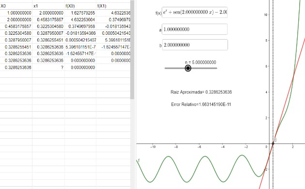

Métodos Numéricos
El método de la secante es un algoritmo numérico utilizado para encontrar aproximaciones a las raíces de una función f(x). A diferencia del método de la bisección, el método de la secante no requiere que la función cambie de signo en el intervalo inicial. En su lugar, utiliza una secuencia de puntos para estimar la raíz. Aquí tienes una descripción básica del método de la secante:
1.Elije dos puntos iniciales x0 y x1 en el dominio de la función f(x). Estos puntos iniciales no necesitan cumplir ninguna condición especial, pero deben estar lo suficientemente cerca de la raíz que se desea encontrar.
2.Calcula el valor de la función en estos dos puntos: f(x0)y f(x1).
3.Usa estos dos puntos para aproximar la pendiente de la función en el intervalo [x0,x1] mediante la fórmula de la recta secante:
m= f(x1)- f(x0)/ x1 - x0
4.Calcula el valor de la siguiente aproximación de la raíz x2 utilizando la pendiente m y el punto x 1 en la ecuación de la recta:x2 = x1 - f(x1) / m
5.Actualiza los valores de x0 y x1 para preparar la siguiente iteración: x0 = x1 x1 = x2
6.Repite los pasos 2-5 hasta que obtengas una aproximación aceptable de la raíz, o hasta que se cumpla un criterio de convergencia predefinido (por ejemplo, cuando f(xn) es lo suficientemente pequeño).
El método de la secante es una técnica iterativa que se acerca a la raíz de manera gradual. A medida que se repiten los pasos, la aproximación de la raíz mejora. Este método es especialmente útil cuando no se conoce la derivada de la función o cuando encontrar la derivada es complicado. Sin embargo, su convergencia no siempre es tan rápida como algunos otros métodos, como el método de Newton-Raphson, pero aún así puede ser una herramienta eficaz para encontrar raíces de funciones no lineales.
# Definición de la función MetodoSecante
def MetodoSecante(f, x0, x1, tol):
error = 1e3 # Inicialización del error con un valor grande.
n = 0 # Contador de iteraciones.
x2 = 0 # Variable para almacenar la aproximación de la raíz.
# Bucle principal que se ejecuta hasta que el error sea menor que la tolerancia.
while error > tol:
# Fórmula del método de la secante para encontrar x2.
x2 = x1 - ((x0 - x1) / (f(x0) - f(x1))) * f(x1)
# Actualizar los valores de x0 y x1 para la siguiente iteración.
x0 = x1
x1 = x2
# Calcular el error absoluto en f(x2).
error = abs(f(x2))
# Incrementar el contador de iteraciones.
n += 1
# Imprimir la solución aproximada y el número de iteraciones.
print("Solución aproximada {:.10f}".format(x2))
print("Número de iteraciones: {:d}".format(n))
# Definición de la función f(x) que se desea encontrar la raíz.
f = lambda x: e**x + sin(2*x) - 2
# Llamada al MétodoSecante con valores iniciales.
MetodoSecante(f, 1, 2, 1e-7)
Solución aproximada 0.3286253636 Número de iteraciones: 5Graficación
